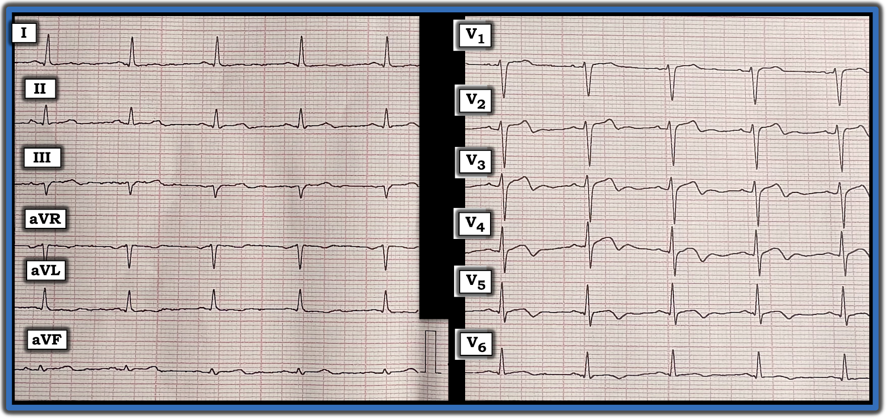

ECG Blog #502 (Video): Đây có phải là hội chứng Wellens không?
==============================
— Ca hôm nay là một ECG Video!
==============================
Điện tâm đồ ở Hình 1 là của một bệnh nhân lớn tuổi bị đánh thức giữa đêm vì CP (đau ngực — Chest Pain) dữ dội. CP xuất hiện từng cơn suốt đêm — và sáng hôm đó bà lại bị đánh thức bởi CP rất dữ dội.
- Sáng hôm đó bệnh nhân gọi đội cấp cứu ngoài viện (EMS) — nhưng CP gần như đã hết vào lúc nhân viên cấp cứu ngoài viện tới (đó cũng là lúc điện tâm đồ ở Hình 1 được ghi).
CÂU HỎI:
- Đây có phải là hội chứng Wellens không?
- — hay — Là một bệnh cảnh khác?


Dưới đây là Video trình bày ca hôm nay (6 phút):
==================================
Lời cảm ơn: Xin cảm ơn Konstantin Тихонов (Moscow, Nga) đã gửi ca bệnh và bản ghi này.
==================================

==================================
Các bài ECG Blog liên quan đến ca hôm nay:
- ECG Blog #205 — Ôn lại Cách tiếp cận hệ thống của tôi để đọc điện tâm đồ 12 chuyển đạo.
- ECG Blog #209, ECG Blog #254 và ECG Blog #309 — Ôn lại các ca LVH nặng gây ra thay đổi sóng ST-T tương tự như có thể gặp trong hội chứng Wellens.
- ECG Blog #245 — Ôn lại cách tiếp cận của tôi trong chẩn đoán LVH (trình bày ở Hình 3 và 4, và là chủ đề của Audio Pearl MP-59 trong Blog #245) trên điện tâm đồ.
- ECG Blog #320 — Ôn lại OMI cấp của nhánh chéo thứ 1 hoặc thứ 2 (biểu hiện dưới dạng hội chứng Wellens).
- ECG Blog #350 — một ca hội chứng Wellens khác.
- ECG Blog #326 — Ôn lại một ca đã bị bỏ sót.
- ECG Blog #337 — ôn lại một ca minh họa sự đối chiếu lâm sàng từng bước giữa các điện tâm đồ liên tiếp với mức độ nặng của triệu chứng.
- Xem bài ngày 15 tháng 10 năm 2022 (kể cả Bình luận của tôi ở cuối trang) — để ôn lại và minh họa khái niệm "xoáy trước tim" (Precordial Swirl) (do OMI đoạn gần LAD).

==================================
PHẦN BỔ SUNG (25/10/2025): Phần dưới đây tôi trích từ Bình luận của tôi trong bài ngày 12/08/2022 trên Dr. Smith's ECG Blog).
==================================
Lịch sử của hội chứng Wellens:
Thật khó tin rằng bài báo gốc mô tả hội chứng Wellens đã được công bố cách đây hơn 40 năm! Tôi nghĩ sẽ rất bổ ích khi quay lại với bài báo gốc này (de Zwaan, Bär & Wellens: Am Heart J 103: 7030-736, 1982):
- Các tác giả (de Zwaan, Bär & Wellens) — đã nghiên cứu 145 bệnh nhân liên tiếp (tuổi trung bình 58) nhập viện vì đau ngực, được nghĩ là đang có nguy cơ sắp xảy ra nhồi máu cấp (Loại trừ bệnh nhân có LBBB, RBBB, LVH hoặc RVH). Trong nhóm này — 26/145 bệnh nhân đã có, hoặc xuất hiện trong vòng 24 giờ sau nhập viện, một hình ảnh sóng ST-T bất thường ở các chuyển đạo trước ngực phía trước mà không có thay đổi phức bộ QRS.
- Tôi đã tái hiện (và điều chỉnh) ở Hình 2 — các mẫu điển hình của 2 hình ảnh điện tâm đồ gặp ở 26 bệnh nhân này. Đáng chú ý — cả 26 bệnh nhân đều biểu hiện thay đổi sóng ST-T đặc trưng ở chuyển đạo V2 và V3.
- Đa số bệnh nhân cũng có thay đổi đặc trưng ở chuyển đạo V4.
- Đa số bệnh nhân có một mức thay đổi sóng ST-T nào đó (nhưng ít hơn) ở chuyển đạo V1.
- Ở một số ít bệnh nhân — sóng ST-T bất thường còn thấy lan tới tận phía bên, ở chuyển đạo V5 và/hoặc V6.
- Một nửa trong 26 bệnh nhân biểu hiện thay đổi sóng ST-T đặc trưng ngay lúc nhập viện. 13/26 bệnh nhân còn lại xuất hiện các thay đổi này trong vòng 24 giờ sau nhập viện.
- Các dấu ấn huyết thanh của nhồi máu (tức CPK, SGOT, SLDH) hoặc bình thường hoặc chỉ tăng tối thiểu.
Các hình ảnh điện tâm đồ của hội chứng Wellens:
2 hình ảnh điện tâm đồ quan sát được ở 26 bệnh nhân có thay đổi sóng ST-T đặc trưng được trình bày ở Hình 2:
- Hình ảnh A — ít gặp hơn nhiều trong nhóm nghiên cứu (tức gặp ở 4/26 bệnh nhân). Đặc điểm là đoạn khởi đầu ST đẳng điện hoặc chênh lên tối thiểu, đoạn ST thẳng hoặc dạng vòm (tức dạng "mặt mếu"), tiếp theo là sóng T đi xuống dốc từ đỉnh cho tới khi kết thúc bằng phần cuối sóng T đảo ngược đối xứng.
- Hình ảnh B — gặp nhiều hơn hẳn (tức gặp ở 22/26 bệnh nhân). Đặc điểm là đoạn ST dạng vòm, về cơ bản không có ST chênh lên — kết thúc bằng sóng T đảo ngược đối xứng, thường sâu một cách đáng ngạc nhiên.

Diễn tiến sóng ST-T trong hội chứng Wellens:
Tôi đã tái hiện (và điều chỉnh) ở Hình 3 — các điện tâm đồ liên tiếp tiêu biểu của một trong các bệnh nhân trong bài báo gốc năm 1982.
- Bệnh nhân có các điện tâm đồ liên tiếp ở Hình 3 — là một nam giới 45 tuổi, đến viện vì đau ngực kéo dài nhiều tuần trước khi nhập viện. Điện tâm đồ ban đầu của ông ở Ô A — không có gì đáng chú ý, tăng tiến sóng R bình thường. Dấu ấn huyết thanh âm tính với nhồi máu. Điều trị nội khoa bằng thuốc chẹn ß và nitrat làm hết mọi triệu chứng.
- Ô B — được ghi 23 giờ sau nhập viện, khi bệnh nhân hoàn toàn không triệu chứng. Điện tâm đồ thứ 2 này cho thấy thay đổi sóng ST-T đặc trưng giống với Hình ảnh B ở Hình 3 (tức sóng T đảo ngược sâu, đối xứng ở nhiều chuyển đạo trước ngực — với sóng T đi xuống dốc, đặc biệt rõ ở chuyển đạo V3).
- Không trình bày ở Hình 3 là các điện tâm đồ tiếp theo ghi trong 3 ngày sau — cho thấy trở lại hình dạng "bình thường" của điện tâm đồ ban đầu (đã trình bày ở Ô A của Hình 3) của bệnh nhân này. Trong thời gian đó — bệnh nhân vẫn không triệu chứng và tăng dần mức độ hoạt động.
- Ô C — được ghi ~5 ngày sau, vì bệnh nhân lên một cơn đau ngực dữ dội mới. Như có thể thấy — mất các lực khử cực phía trước (QS sâu ở chuyển đạo V3) kèm ST chênh lên thành trước rõ rệt, phù hợp với STEMI diện rộng. Đáng tiếc — bệnh nhân tử vong do sốc tim trong vòng 12 giờ sau khi ghi bản ghi này. Tử thiết cho thấy nhồi máu trước vách diện rộng, tắc hoàn toàn động mạch vành do cục huyết khối mới ở chỗ chia đôi giữa thân chung động mạch vành trái (LMain) và đoạn gần LAD.

— Ô A: Điện tâm đồ ban đầu lúc nhập viện;
— Ô B: Điện tâm đồ ghi lại 23 giờ sau A. Bệnh nhân không đau ngực trong 23 giờ này. LƯU Ý: 3 ngày sau B — hình dạng điện tâm đồ của bệnh nhân này rất giống với A ( = bản ghi ban đầu).
— Ô C: 5 ngày sau — bệnh nhân quay lại với một cơn đau ngực dữ dội mới. Như thấy trên bản ghi này (C) — bệnh nhân đã tiến triển thành STEMI thành trước diện rộng. Ông tử vong trong vòng vài giờ do sốc tim (Hình được điều chỉnh từ de Zwaan, Bär & Wellens: Am Heart J 103:730-736, 1982 — Xem phần bài viết).
==========================
Các phát hiện còn giá trị từ bài báo năm 1982:
Hình ảnh điện tâm đồ được gọi là hội chứng Wellens đã được mô tả cách đây hơn 40 năm. Các phát hiện lâm sàng rút ra từ bài báo gốc năm 1982 của de Zwaan, Bär & Wellens đến nay vẫn còn giá trị.
- Một trong 2 hình ảnh điện tâm đồ trình bày ở Hình 3, với bất thường sóng ST-T đặc trưng ở các chuyển đạo trước ngực phía trước — gặp ở 18% trong 145 bệnh nhân nhập viện vì đau ngực do tim mới xuất hiện hoặc nặng lên.
- Có thể gặp các biến thể về hình dạng của 2 hình ảnh điện tâm đồ này ở những bệnh nhân nhập viện vì đau ngực. Các điện tâm đồ liên tiếp không cho thấy thay đổi hình dạng QRS (tức không xuất hiện sóng Q hay phức bộ QS). Dấu ấn huyết thanh của nhồi máu vẫn bình thường, hoặc chỉ tăng tối thiểu.
- Trong phân nhóm bệnh nhân của bài báo năm 1982 không được phẫu thuật bắc cầu — 75% (12/16 bệnh nhân) đã tiến triển thành STEMI thành trước diện rộng do tắc LAD đoạn gần trong vòng 1-2 tuần sau khi hết đau.
BÀI HỌC cần rút ra:
Vào thời điểm viết bài báo năm 1982 — các tác giả chưa chắc chắn về cơ chế gây ra 2 hình ảnh điện tâm đồ của hội chứng Wellens.
- Giờ đây chúng ta đã biết cơ chế. Một tỷ lệ cao bệnh nhân đến khoa cấp cứu (ED) vì đau ngực do tim mới xuất hiện rồi sau đó tự hết — và ngay sau đó xuất hiện một dạng nào đó của các hình ảnh điện tâm đồ như ở Hình 1 — đã bị tắc động mạch vành mới đây ở đoạn gần LAD — rồi sau đó mạch tự thông lại.
- Lý do sóng Q không xuất hiện trên điện tâm đồ và dấu ấn huyết thanh của nhồi máu bình thường (hoặc cùng lắm chỉ tăng tối thiểu) — là vì thời gian tắc động mạch vành rất ngắn. Tổn thương cơ tim là tối thiểu (nếu thực sự có tổn thương).
- NHƯNG: Cái gì đã tự tắc, rồi tự thông lại — thì có thể tiếp tục chu kỳ tắc — thông lại — tắc lại — thông lại này cho đến khi rốt cuộc đạt tới một kết cục cuối cùng (tức động mạch "thủ phạm" hoặc thông hẳn hoặc tắc hẳn).
- Về lâm sàng: Chúng ta có thể biết động mạch "thủ phạm" đang thông hay tắc bằng cách đối chiếu các điện tâm đồ liên tiếp với diễn biến đau ngực của bệnh nhân. Ví dụ — đau ngực hết đi kèm với ST bớt chênh lên gợi ý động mạch "thủ phạm" đã tự thông lại. Và nếu sau đó đau ngực trở lại kèm ST chênh lên trở lại — thì nhiều khả năng động mạch "thủ phạm" đã tắc lại.
- Tầm quan trọng của việc nhận ra hội chứng Wellens — là nó cho biết thông tim kịp thời là thiết yếu NẾU chúng ta muốn ngăn mạch tắc lại. Trong nghiên cứu của de Zwaan, Bär & Wellens — 75% số bệnh nhân đã hết đau này có thay đổi sóng ST-T kiểu Wellens đã tiến triển thành STEMI thành trước diện rộng trong vòng 1-2 tuần sau đó nếu không được điều trị.
- Như vậy, mục tiêu của việc nhận ra hội chứng Wellens — là can thiệp trước khi xảy ra tổn thương cơ tim đáng kể (tức tiêu chuẩn chẩn đoán hội chứng này đòi hỏi chưa xuất hiện sóng Q hay phức bộ QS ở thành trước — và dấu ấn huyết thanh của nhồi máu chỉ tăng tối thiểu).
- Đó không phải là "hội chứng Wellens" — NẾU bệnh nhân đang có CP (đau ngực) vào lúc thấy một trong các hình ảnh điện tâm đồ ở Hình 2. CP đang diễn ra gợi ý động mạch "thủ phạm" vẫn còn tắc.
- Tiêu chuẩn loại trừ trong nghiên cứu năm 1982 là bệnh nhân có LBBB, RBBB, LVH hoặc RVH. Tất nhiên tắc cấp đoạn gần LAD vẫn có thể xảy ra ở bệnh nhân có rối loạn dẫn truyền hoặc lớn buồng tim — nhưng nhận ra các hình ảnh của hội chứng Wellens khó hơn nhiều khi có bất kỳ dấu hiệu điện tâm đồ nào trong số này.
Một lời cuối về 2 hình ảnh điện tâm đồ ở Hình 2.
- Như dữ liệu trong bài báo gốc năm 1982 gợi ý, Hình ảnh A — ít gặp hơn nhiều, nhưng đặc hiệu hơn cho hội chứng Wellens NẾU đi kèm với bệnh sử "phù hợp" (tức trước đó có đau ngực — và đã hết vào lúc xuất hiện bất thường sóng ST-T).
- Không giống Hình ảnh A ở Hình 2 — Hình ảnh B có thể chỉ là sóng T đảo ngược đối xứng ở một số chuyển đạo trước ngực mà không có phần sóng T dương lúc đầu rồi đi xuống dốc thành phần cuối âm. Vấn đề chẩn đoán — là sóng T đảo ngược sâu, đối xứng có thể gặp trong nhiều bệnh cảnh khác, do đó kém đặc hiệu hơn nhiều cho hội chứng Wellens.
Kết luận: 145 bệnh nhân được de Zwaan, Bär & Wellens nghiên cứu năm 1982 đến nay vẫn tiếp tục mang lại hiểu biết lâm sàng về bản chất của hội chứng Wellens.